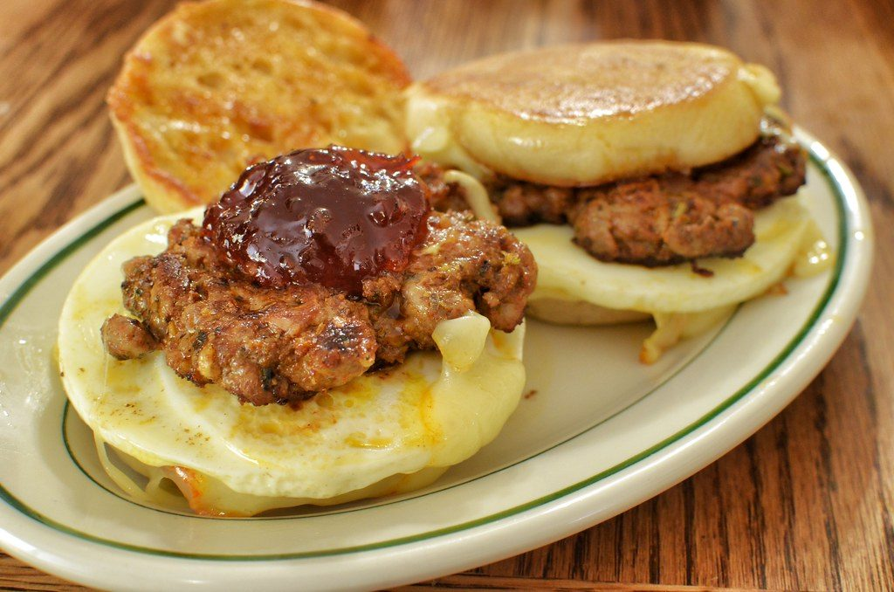

High-Protein Breakfast Meal Prep: 5 Make-Ahead Ideas
Breakfast is where most people miss their protein target. These five make-ahead options deliver 20–28 g before you've even had your coffee — and none of them takes more than 30 minutes to prep.

Overnight oats: 5 minutes tonight, breakfast tomorrow.
The math of breakfast protein is simple: a bowl of cereal gives you about 5 g. You need 20–30 g to stay full until lunch. The recipes below close that gap with Greek yogurt, eggs, protein powder, and chia seeds — and every one of them is made ahead, so weekday mornings are grab-and-go.
Pick two per week and rotate. All five work in the 7-day meal prep plan.
1. Protein Overnight Oats — 28g Protein
The highest-protein breakfast here, and the easiest: stir five ingredients in a jar, refrigerate, done. Make four jars on Sunday and breakfast is solved through Thursday.
Protein Overnight Oats
Ingredients (per jar)
- ½ cup rolled oats
- ½ cup milk
- ½ cup plain Greek yogurt
- 1 scoop (25 g) vanilla protein powder
- 1 tbsp chia seeds
- ½ tsp vanilla extract
- ½ cup berries and 1 tbsp peanut butter, to serve
Steps
- Stir the oats, milk, yogurt, protein powder, chia seeds, and vanilla together in a jar or container.
- Seal and refrigerate at least 4 hours, or overnight.
- Top with berries and peanut butter before eating. Keeps 4 days refrigerated.
| Calories | Protein | Carbs | Fat |
|---|---|---|---|
| 420 | 28 g | 48 g | 11 g |
2. Egg White & Veggie Muffins — 22g Protein
Twelve muffins, one muffin tin, 30 minutes. Two muffins per serving, and they freeze for two months — the definition of a batch-cook breakfast.
Egg White & Veggie Muffins
Ingredients
- 8 large eggs, 1 cup egg whites
- 1 bell pepper, finely diced
- 1 cup baby spinach, chopped
- ½ cup shredded cheddar
- ½ tsp salt, ¼ tsp black pepper; cooking spray
Steps
- Heat the oven to 350°F (175°C). Spray a 12-cup muffin tin well.
- Whisk the eggs, egg whites, salt, and pepper. Stir in the pepper, spinach, and cheese.
- Divide evenly among the muffin cups, about ¼ cup each.
- Bake 18–20 minutes until set. Cool 10 minutes, then remove. Refrigerate 4 days or freeze up to 2 months.
| Calories | Protein | Carbs | Fat |
|---|---|---|---|
| 220 | 22 g | 5 g | 12 g |

Freezer breakfast sandwiches: 90 seconds from freezer to breakfast.
3. Freezer Breakfast Sandwiches — 26g Protein
Assemble six on Sunday, freeze them, and microwave one each morning. They taste suspiciously like the drive-through version, for a fraction of the price.
Freezer Breakfast Sandwiches
Ingredients
- 6 English muffins, split
- 6 large eggs
- 6 sausage patties (or turkey sausage)
- 6 slices cheddar cheese
- 1 tbsp butter; salt and pepper
Steps
- Cook the sausage patties in a skillet according to package directions; set aside.
- Fry the eggs in butter in the same skillet, breaking the yolks for flat sandwich-sized eggs. Season with salt and pepper.
- Toast the English muffins. Assemble each sandwich: muffin, egg, cheese, sausage patty, muffin top.
- Cool completely, wrap each sandwich in foil, and freeze up to 2 months. Reheat from frozen: microwave 90 seconds, flipping once.
| Calories | Protein | Carbs | Fat |
|---|---|---|---|
| 410 | 26 g | 30 g | 20 g |
4. Greek Yogurt Parfait Jars — 24g Protein
Zero cooking, 10 minutes of layering, and they look good enough to photograph. The trick is packing the granola separately so it stays crunchy.
Greek Yogurt Parfait Jars
Ingredients
- 3 cups plain nonfat Greek yogurt
- 2 cups mixed berries
- 1 cup granola
- 2 tbsp honey, 1 tsp vanilla extract
Steps
- Stir the honey and vanilla into the yogurt.
- Layer yogurt, berries, and granola in 4 jars, ending with berries on top.
- Seal and refrigerate up to 4 days. For crunchy granola, pack it separately and add at serving time.
| Calories | Protein | Carbs | Fat |
|---|---|---|---|
| 350 | 24 g | 38 g | 10 g |
5. High-Protein Chia Pudding — 20g Protein
Chia pudding has a reputation as a health-food cliché, but with protein powder and Greek yogurt stirred in, it's a legitimate 20 g breakfast that takes 5 minutes to make. The texture is the love-it-or-hate-it part — if you're unsure, blend it smooth.
High-Protein Chia Pudding
Ingredients
- ¼ cup chia seeds
- 1 cup milk
- ½ cup plain Greek yogurt
- 1 scoop (25 g) protein powder
- 1 tbsp maple syrup, ½ tsp vanilla extract
- Sliced fruit and nuts, to serve
Steps
- Whisk the milk, yogurt, protein powder, maple syrup, and vanilla in a bowl until smooth.
- Stir in the chia seeds. Wait 5 minutes, stir again to break up clumps.
- Divide into 2 jars and refrigerate at least 4 hours or overnight. Top with fruit and nuts to serve. Keeps 5 days.
| Calories | Protein | Carbs | Fat |
|---|---|---|---|
| 330 | 20 g | 28 g | 14 g |
Breakfast Prep Tips
- Jars are your friend. Overnight oats, parfaits, and chia pudding all live in mason jars — see the container guide for the wide-mouth jars we use.
- Freeze the sandwiches, fridge the rest. Egg muffins and sandwiches freeze well for 2 months; oats, parfaits, and chia pudding are fridge-only (4–5 days).
- Double the oats. Overnight oats scale perfectly — make 4 jars at once and you're done for the week.
- Protein powder is optional but effective. One scoop adds 20–25 g of protein to oats or chia pudding for about $1. Skip it and the oats still give you ~15 g from the yogurt and milk.
Pair these with the 7-day meal prep plan for a full week of high-protein eating, or try the budget meal prep guide for the cheapest way to hit your protein target.